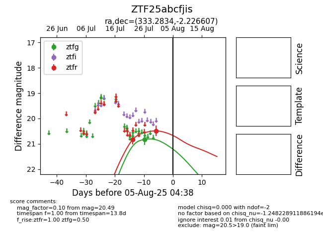

Target ZTF25abcfjis at 2025-08-05 04:38, see:
FINK: fink-portal.org/ZTF25abcfjis
Lasair: lasair-ztf.lsst.ac.uk/objects/ZTF25abcfjis
ALeRCE: alerce.online/object/ZTF25abcfjis
alt names
ZTF25abcfjis (ztf,fink)
coordinates:
equatorial (ra, dec) = (333.2834,-2.22661)
galactic (l, b) = (59.3751,-44.68290)
photometry
last ztfg=20.83, ztfr=20.49
1 ztfg, 2 ztfr detections
